O NAMA

Kontakt
Bokeški Forum
"Rukama Ruke Pružimo"
OČUVANJE BOKEŠKE KULTURE I IDENTITET
Bokeški Forum je organizacija, nadvjerska, nadnacionalna, čiji je osnovni cilj očuvanje bokeškog identiteta, kulture i tradicije i spriječavanje daljeg pljačkanja Boke, koju oni koji je očigledno najmanje i znaju i cijene, doživljavaju kao područje za pokrivanje svih mogućih gubitaka i loših investicija.
Naš cilj jeste da ustanemo u odbranu Boke i bokeških interesa čvrsto se obavezujući da ostanemo vjerni osnovnim principima vrijednim Boke. Vrijednim života !!!
To prije svega znači beskompromisnu borbu protiv surovih i diskriminatorskih zakona Morskog dobra, protiv zloupotrebe obale kao najvrijednijeg crnogorskog resursa, protiv pljačkaših poreza na nepokretnosti, protiv diskriminatorskog odnosa koji Planom o obalnom području Ministarstvo održivog razvoja i turizma, obezvrijeđuje zemlju starosjedilaca, protiv privatizacije preduzeća koja lako mogu da funkcionišu kao javna, čime bi se obezbijedila i zarada i otvorila radna mjesta za domaće stanovništvo.
Zato, apel „Boka Bokeljima“ nije i ne može biti diskriminatorski, jer uključuje sve one koji Boku doživljavaju kao svoj dom, kao mjesto na kom su se susrele nacije, vjere i kulture, da grade sebi život dostojan čovjeka.
BITI BOKELJ NE ZNAČI RODITI SE U BOKI NEGO BOKU VOLJETI I POŠTOVATI !
UKIDANJE JP “MORSKO DOBRO”
Bokeški Forum” (BF) zatražio je da sve plaže na Crnogorskom primorju budu tretirane kao javno dobro dostupno svima, a ne samo pojedinim krugovima, odnosno tajkunima sa kapitalom sumnjivog porijekla.
JP “Morsko dobro” svojim dosadašnjim funkcionisanjem pokazalo da je jedan od najvećih neprijatelja Boke i Bokelja i ne zaslužuje da postoji.
POŠTOVANJE PRINCIPA POZITIVNE DISKRIMINACIJE PRILIKOM ZAPOŠLJAVANJA
Bokeški Forum zalaže se za principe pozitivne diskriminacije prilikom dobijanja posla i to u dva slučaju.
Prvi jeste prioritet prilikom zapošljavanja lica sa posebnim potrebama u slučajevima u kojima takvo lice na kvalitetan način može da obavlja predviđeni posao.
Drugi je: kada lice sa teritorije opštine u kojoj živi i lice koje nije stanovnik te opštine (bilo da se nalazi na primorju, centralnom region ili na sjeveru Crne Gore) konkurišu za isti posao, u slučaju ispunjavanja istih uslova, prednost ima domicilno stanovništvo. To se posebno odnosi na sklapanje ugovora sa, krupnim investitorima, sa kojima su do sada Ugovori sklapani isključivo na štetu domaćeg stanovništva.
ZALAGANJE ZA PRINCIPE DECENTRALIZACIJE
Osnovno načelo na kojem Bokeški Forum zasniva svoj rad jeste načelo decentralizacije: kako na nivou Crne Gore, tako i u radu lokalnih samopuprava.
Naime, tražimo veći stepen nezavisnosti Mjesnih zajednica, kojima će se putem budžetskih sredstava omogućavati da sami realizuju projekte vezane za određena područja opština.
Niko, kao stanovnici tih djelova grada (gradova) ne mogu bolje znati ni akutne problem, niti davati adekvatnije odgovore za njihovo rješavanje.
ZABRANA PRIVATIZACIJE INSTITUCIJA OD LOKALNOG I REGIONALNOG ZNAČAJA
Bokeški Forum najoštrije se suprotstavlja privatizacijama onih institucija koje bi na kvalitetan način mogle da posluju i bez privatnih ulaganja.
Gazdovanje ovim objektima i prikupljanje prihoda mora biti zadatak Opština, odnosno u tom smislu specijalno formiranih preduzeća, zahvaljujući kojima bi se na kvalitetan i prije svega legalan način popunjavali opštinski budžeti, a za domicilno stanovništvo obezbjedila kvalitetnija radna mjesta.
PREVAZILAŽENJE VJERSKIH I NACIONALNIH RAZLIKA (UJEDINJENJE BOKELJA)
Suština postojanja „Bokeškog Foruma“ jeste prevazilaženje podjela, nacionalnih, vjerskih…
Naš apel „Boka Bokeljima“ upućen je svim dobronamjernim stanovnicima Boke, pri čemu posebno ističemo da biti Bokelj ne znači roditi se u Boki, već ovakvu kakva je, sa svim njenim sličnostima i različitostima voljeti i poštovati. A ne je doživljavati kao mjesto za ostvarivanje sitnosopstveničkih interesa, ne vodeći računa ni o interesima Boke, ni o interesima Bokelja, rasprodajući njenu zemlju kao jeftinu prćiju.
Vrijeme je da se Bokelji ujedine, da svi skupa ponosno stanemo u borbu za naše interese. Za očuvanje naših bokeških vrijednosti, bez obzira da li se i kako krstili. Imajući tom prilikom na umu da biti Bokelj, predstavlja prije svega način života.
FORMIRANJE BOKEŠKE SKUPŠTINE KAO AUTONOMNOG ZAKONODAVNOG TIJELA
Insisitiramo da se formira decentralizovana Bokeška skupština, na kojoj bi građani Boke birali svoje predstavnike.
Zalažući se za jaku decentralizaciju Boke, smatramo da bi ova skupština jedina mogla da na pravi način prepozna interese Bokelja.
Ovakvo zalaganje “Bokeškog Foruma” ni u jednom trenutku ne dovodi u pitanje integritet niti dira u Ustav i vrijednosti države Crne Gore, niti bilo kojeg njenog građanina. Naprotiv smatramo da se ovim samo doprinosi njenom kvalitetnijem i ravnomjernijem razvoju.
PODRŠKA RODNOJ RAVNOPRAVNOSTI
U smislu prevazilaženja svih razlika među ljudima Bokeški Forum posebno insisitira na aktivnijem uključivanju žena u društvena dešavanja (ne samo politička).
Demokratsko društvo zahtijeva istinsko postojanje rodne ravnospravnosti i Bokeški Forum kroz svoj rad i političko angažovanje, pa i sam sastav, čvrsto zastupa stav da je neophodno postojeće propise implementirati u praksu. Svaka žena dosljedna vrijednostima njegovanja porodice, u mnogome može doprinijeti stvaranju i očuvanju zdravog i prosperitetnog društva.
Potvrda toga jesu i protekli lokalni izbori u Tivtu na kojem je prvi put u crnogorskoj istoriji jedna lista (ona “Bokeškog Foruma”) imala više žena nego muškaraca (18:14).
ZNAČAJNIJA ULAGANJA U SPORT
Hvaleći se pomacima u oblasti turizma, novim asortimanima koji se nude, ljudi nadležni ne samo za sadašnjost, nego i za budućnost i prošlost Boke čini se rade sve kako bi ubili ono što pored kulture jedno društvo čini zdravim. Sport!
Namjerno ili ne pokazaće vrijeme, kao što će odgovorni morati i da odgovore: zbog čijih interesa. Poseban problem jeste problem SPORTSKE INFRASTRUKTURE u svim bokeškim opštinama.
Zbog toga Bokeški Forum insistira da se veća sredstva iz budžeta ulože u sport i kulturu.
U tom smislu Bokeški Forum poseban naglasak daje na razvoju SPORTSKOG TURIZMA, kao najsigurnijeg vida produženja sezone.
PODRŠKA KULTURNIM MANIFESTACIJAMA OD LOKALNOG I REGIONALNOG ZNAČAJA
Očuvanje bokeške kulture i identiteta ( kulturno blago Boke čini preko 70% kulturnog blaga Crne Gore) moguće je samo očuvanjem naše autentičnosti, koja na račun urbanizacije i razvoja “elitnog” turizma.
Zbog toga “Bokeški Forum” insistira da se manifestacije od regionalnog i lokalnog interesa značajnije podrže. Kao i da se osmisle manifestacije sličnog sadržaja koje bi zamjenile “turbo folk” doživljaj Boke.
Posebno važno za pitanje Boke i Bokelja, jeste maksimalna pomoć koju sve Opštine, uključujući i Ministarstvo kulture moraju pružiti Bokeljskoj mornarici, kao istinskom kulturnom blagu ne samo Boke nego i Crne Gore.
NJEGOVANJE PRINCIPA VLADAVINE PRAVA I SOCIJALNE PRAVDE
Opštine same moraju u vidu dotacija da potpomažu kvalitetniju socijalnu politiku posebno ulažući u zdravstvo i obrazovanje.
Svim stanovnicima Boke moraju se pružiti jednake mogućnosti obrazovanja i liječenja i sa naročitom se brigom odnositi prema socijalno ugroženim kategorijama.
Vladavina prava nužan je uslov napredka svakog društva i Boka mora biti na najkvalitetniji način, kao simbol kulture, oličenje krilatice da smo pred Bogom i zakonom svi isti.
STOP PARTIJSKOM ZAPOŠLJAVANJU
Bokeški Forum insistira na tome da upravljanje institucijama od lokalnog i regionalnog značaja ne smije da se vodi po principima političke podobnosti, odnosno da se na odgovorna mjesta biraju partijski pioni.
Insistiramo na vlasti sposobnih, a ne politički podobnih.
Građanska Boka u građanskoj Crnoj Gori naš je imperativ.
Jer Crna Gora je naša država, a Boka je naš dom.
Sve
Vijesti
Akcije
Ostalo
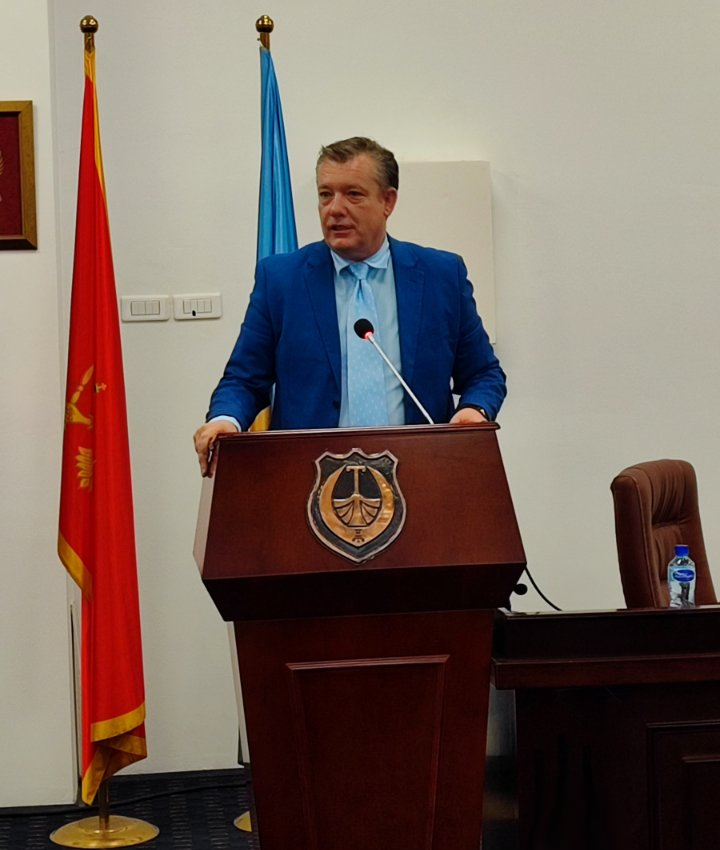
Dr Andrija Petković novi potpredsjednik Opštine Tivat
Detaljnije
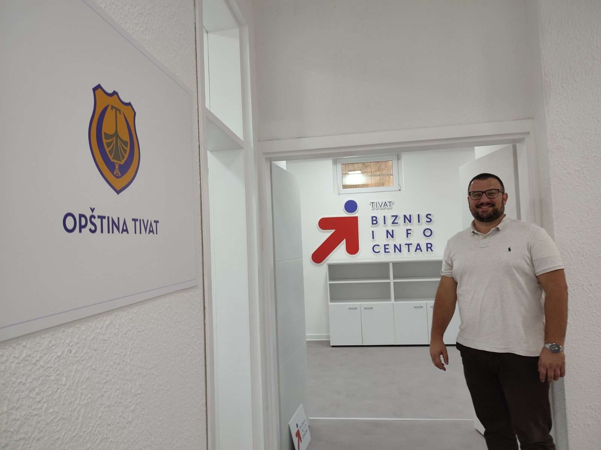
VEDRAN BOŽINOVIĆ (BOKEŠKI FORUM): OTVOREN BIZINS CENTAR, CILJ ZADRŽATI MLADE U TIVTU
DetaljnijeSandra Sindik (Bokeški Forum): Skupština CG da izglasa jun u oktobru
Detaljnije
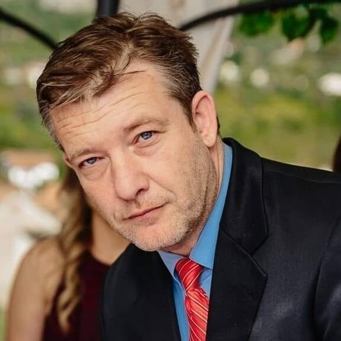
DR ANDRIJA PETKOVIĆ: 5.JUN - DAN KAD SU UKRADENI IZBORI
Detaljnije
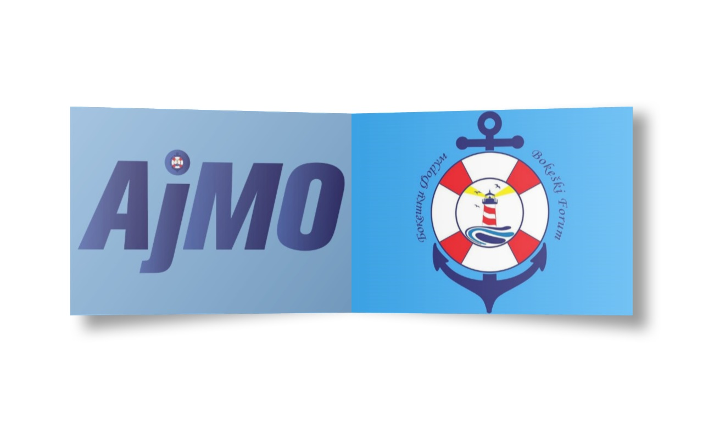
Bokeški Forum predao listu za izbore u Tivtu
Detaljnije
Bokeški Forum predao listu za izbore u Tivtu
"AJMO ZA TIVAT, AJMO ZA BOKU"
Detaljnije
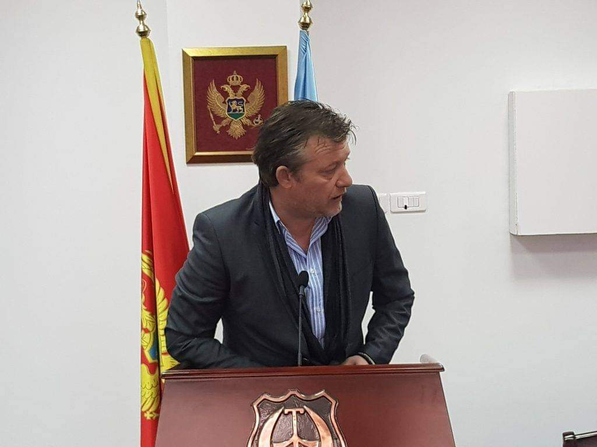
DR ANDRIJA PETKOVIĆ (BOKEŠKI FORUM): BJEŽE OD IZBORA I NEČISTE SAVJESTI
Detaljnije
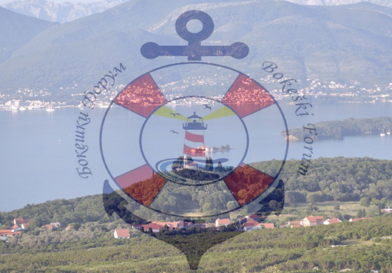
Bokeški Forum: Odlaganje izbora predstavlja klasični oblik pravnog nasilja
Detaljnije
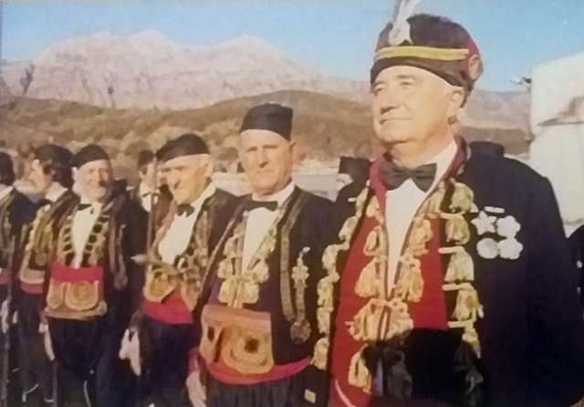
OČUVANJE BOKEŠKE KULTURE I IDENTITET
DetaljnijePREVAZILAŽENJE VJERSKIH I NACIONALNIH RAZLIKA (UJEDINJENJE BOKELJA)
DetaljnijePOŠTOVANJE PRINCIPA POZITIVNE DISKRIMINACIJE PRILIKOM ZAPOŠLJAVANJA
Detaljnije
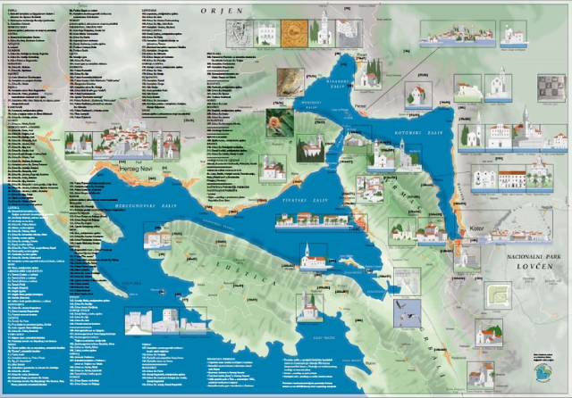
ZABRANA PRIVATIZACIJE INSTITUCIJA OD LOKALNOG I REGIONALNOG ZNAČAJA
Detaljnije
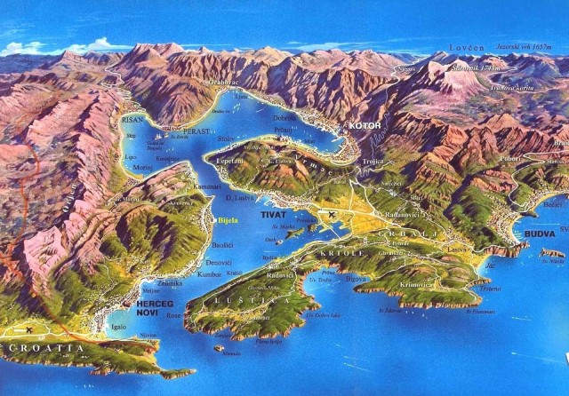
UKIDANJE JP “MORSKO DOBRO”
Detaljnije
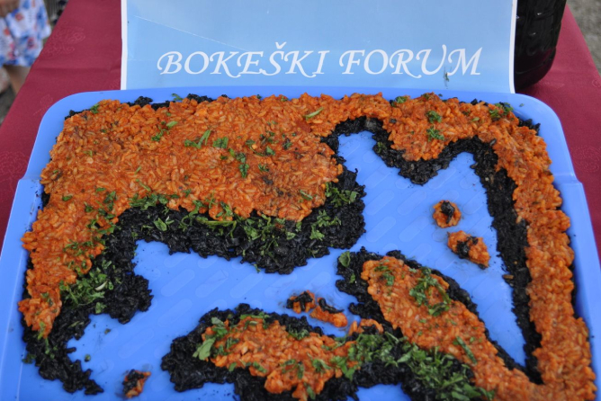
FORMIRANJE BOKEŠKE SKUPŠTINE KAO AUTONOMNOG ZAKONODAVNOG TIJELA
DetaljnijePODRŠKA RODNOJ RAVNOPRAVNOSTI
Detaljnije
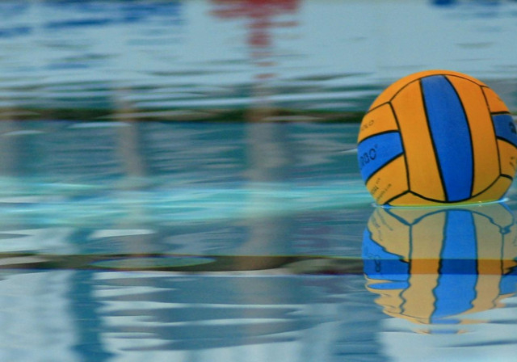
ZNAČAJNIJA ULAGANJA U SPORT
Detaljnije
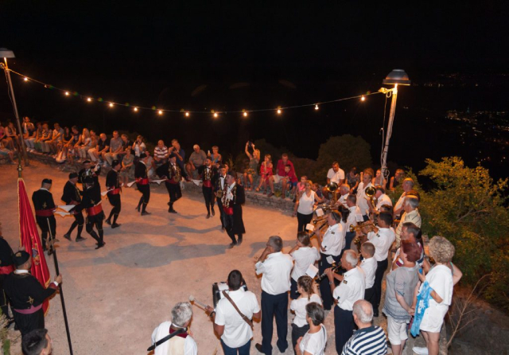
PODRŠKA KULTURNIM MANIFESTACIJAMA OD LOKALNOG I REGIONALNOG ZNAČAJA
DetaljnijeNJEGOVANJE PRINCIPA VLADAVINE PRAVA I SOCIJALNE PRAVDE
Detaljnije
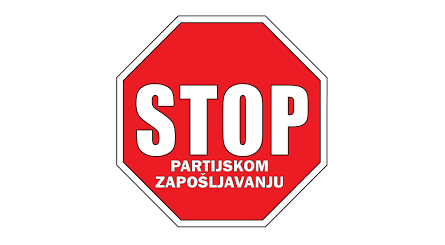
STOP PARTIJSKOM ZAPOŠLJAVANJU
Detaljnije
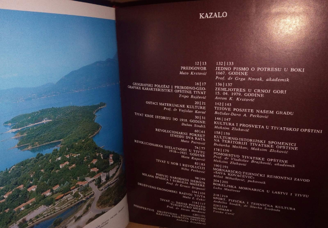
ISTORIJA BOKELJSKE MORNARICE U LASTVI I TIVTU
Detaljnije
Biće nam čast i zadovoljstvo da nam se pridružite i radite sa nama.